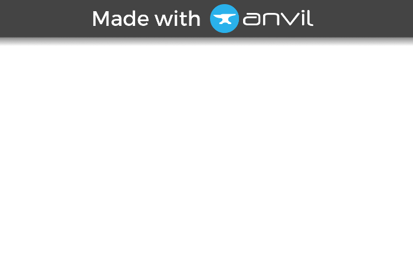
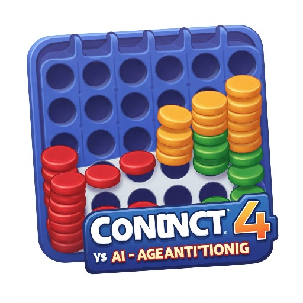

Build web apps for free with
Built with
Anvil
Built with


Drop title here
Connect 4
Drop a FlowPanel here
To add a sidebar, drop a ColumnPanel here.
Login
Email:
Password:
Login
Drop a ColumnPanel here.
This app has experienced an error
Click for more information
Execution paused
Switch to the IDE to continue
⏸